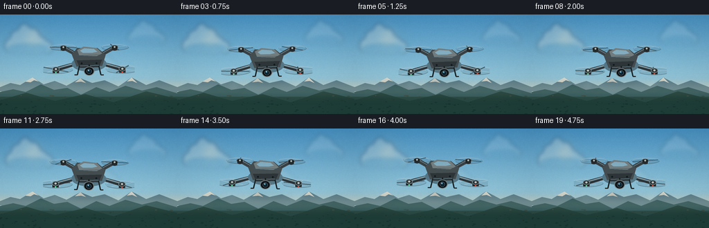
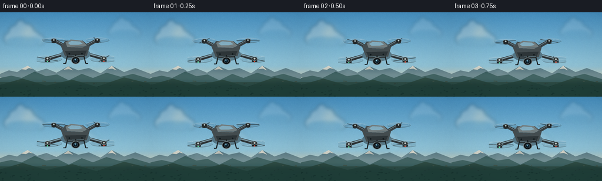

CODING AGENTS AS PIXEL WORLD MODELS
traex/GPT-5.6-Sol · instance_preservation_0040
点击播放 · 原生 RGB 像素
逐轮保存的候选
回放视频、检查图与代码变化。
每份候选均可单独播放。实际图片检查记录在下方工具轨迹中。
候选 01播放与检查图
点击播放 · 原生 RGB 像素


展开代码变化
--- 上一保存版本
+++ 本次保存版本
@@ -0,0 +1,236 @@
+from pathlib import Path
+import math
+import numpy as np
+from PIL import Image, ImageDraw, ImageFilter
+import artifact_io
+
+# Procedural text-to-video renderer. No external assets are used.
+W, H, N = 256, 144, 20
+S = 4
+SW, SH = W*S, H*S
+rng = np.random.default_rng(4187)
+
+
+def sc(v):
+ return int(round(v*S))
+
+
+def soft_cloud(cx, cy, width, opacity, warm=False):
+ """A softly shaded cloud on a transparent supersampled layer."""
+ layer = Image.new('RGBA', (SW, SH), (0, 0, 0, 0))
+ d = ImageDraw.Draw(layer, 'RGBA')
+ color = (255, 244, 229) if warm else (244, 250, 251)
+ # deterministic bank of overlapping puffs
+ puffs = [
+ (-.39, .04, .25, .30), (-.25, -.08, .31, .44), (-.08, -.18, .32, .55),
+ (.10, -.11, .35, .48), (.28, .01, .29, .35), (.43, .08, .23, .28),
+ (-.13, .08, .50, .28), (.15, .10, .54, .26)
+ ]
+ for ox, oy, rw, rh in puffs:
+ x = cx + ox*width; y = cy + oy*width
+ box = (sc(x-rw*width/2), sc(y-rh*width/2), sc(x+rw*width/2), sc(y+rh*width/2))
+ d.ellipse(box, fill=(*color, int(opacity*0.54)))
+ # flat, slightly shadowed underside
+ d.ellipse((sc(cx-width*.45), sc(cy+width*.01), sc(cx+width*.48), sc(cy+width*.23)),
+ fill=(138, 170, 180, int(opacity*.12)))
+ return layer.filter(ImageFilter.GaussianBlur(sc(3.0)))
+
+
+def background(frame):
+ # Cinematic sky gradient with a warm horizon.
+ yy = np.linspace(0, 1, SH)[:, None, None]
+ top = np.array([70, 144, 193], dtype=float)[None, None, :]
+ mid = np.array([158, 205, 220], dtype=float)[None, None, :]
+ bottom = np.array([248, 205, 154], dtype=float)[None, None, :]
+ t = np.clip(yy / .72, 0, 1)
+ sky = top*(1-t) + mid*t
+ u = np.clip((yy-.64)/.36, 0, 1)
+ sky = sky*(1-u) + bottom*u
+ sky = np.repeat(sky, SW, axis=1)
+ # Fine atmospheric grain, fixed in world coordinates to avoid flicker.
+ noise_small = rng_bg
+ sky = np.clip(sky + noise_small[..., None], 0, 255).astype(np.uint8)
+ im = Image.fromarray(sky, 'RGB').convert('RGBA')
+
+ # Sun glow at upper left, behind cloud veil.
+ glow = Image.new('RGBA', (SW, SH), (0, 0, 0, 0))
+ gd = ImageDraw.Draw(glow, 'RGBA')
+ for r in range(31, 3, -2):
+ a = int(2 + (31-r)*0.18)
+ gd.ellipse((sc(48-r), sc(34-r), sc(48+r), sc(34+r)), fill=(255, 231, 174, a))
+ gd.ellipse((sc(40), sc(26), sc(56), sc(42)), fill=(255, 239, 194, 92))
+ glow = glow.filter(ImageFilter.GaussianBlur(sc(7)))
+ im = Image.alpha_composite(im, glow)
+
+ drift = frame * .11
+ im = Image.alpha_composite(im, soft_cloud(40+drift, 42, 65, 108, True))
+ im = Image.alpha_composite(im, soft_cloud(211+drift*.65, 31, 52, 68, False))
+ im = Image.alpha_composite(im, soft_cloud(151+drift*.8, 73, 39, 36, True))
+
+ # Layered distant mountains and mist create aerial depth.
+ md = ImageDraw.Draw(im, 'RGBA')
+ far = [(0,111),(0,105),(15,99),(29,102),(47,91),(63,101),(79,96),(96,103),
+ (116,92),(133,99),(151,95),(171,104),(190,91),(211,102),(230,95),(256,105),(256,144)]
+ md.polygon([(sc(x-drift*.08),sc(y)) for x,y in far], fill=(96,132,144,112))
+ snow = [(36,97),(47,91),(56,97),(49,95),(44,98)], [(108,98),(116,92),(124,99),(117,97)], [(183,97),(190,91),(198,99),(191,96)]
+ for poly in snow:
+ md.polygon([(sc(x),sc(y)) for x,y in poly], fill=(224,226,216,75))
+ near = [(0,119),(0,112),(19,108),(37,112),(59,101),(78,109),(97,106),(117,116),
+ (139,105),(158,112),(181,103),(205,110),(226,105),(256,114),(256,144)]
+ md.polygon([(sc(x),sc(y)) for x,y in near], fill=(48,88,91,168))
+ # Foothills and valley haze
+ md.rectangle((0,sc(119),SW,SH), fill=(39,72,67,210))
+ md.polygon([(0,sc(124)),(sc(38),sc(113)),(sc(79),sc(125)),(sc(123),sc(115)),(sc(164),sc(127)),(sc(211),sc(111)),(SW,sc(122)),(SW,SH),(0,SH)], fill=(31,63,57,215))
+ # scattered tree texture
+ for x, y, rr in terrain_dots:
+ md.ellipse((sc(x-rr),sc(y-rr*.45),sc(x+rr),sc(y+rr*.45)), fill=(24,54,50,45))
+ # translucent atmospheric band at horizon
+ mist = Image.new('RGBA',(SW,SH),(0,0,0,0))
+ mistd = ImageDraw.Draw(mist,'RGBA')
+ mistd.rectangle((0,sc(98),SW,sc(121)), fill=(221,216,185,25))
+ mist = mist.filter(ImageFilter.GaussianBlur(sc(7)))
+ return Image.alpha_composite(im, mist)
+
+
+# fixed texture fields
+rng0 = np.random.default_rng(737)
+small_noise = rng0.normal(0, 1.15, (H, W)).astype(np.float32)
+rng_bg = np.array(Image.fromarray(np.uint8(np.clip(small_noise+128,0,255))).resize((SW,SH),Image.Resampling.BILINEAR), dtype=np.float32)-128
+terrain_dots = [(float(rng0.uniform(0,256)), float(rng0.uniform(117,145)), float(rng0.uniform(.5,2.2))) for _ in range(100)]
+
+
+def drone_layer(frame):
+ """Render the same high-detail quadcopter instance with a gentle hover pose."""
+ layer = Image.new('RGBA', (SW, SH), (0,0,0,0))
+ # Drone drawn locally, then rotated as one rigid object for coherent instance motion.
+ local = Image.new('RGBA', (sc(132), sc(94)), (0,0,0,0))
+ d = ImageDraw.Draw(local, 'RGBA')
+ ox, oy = 66, 43
+ phase = 2*math.pi*frame/N
+ # Perspective motor locations: rear pair is smaller/higher, front pair wider/lower.
+ motors = {'rl':(-37,-17), 'rr':(37,-17), 'fl':(-48,15), 'fr':(48,15)}
+
+ # Rotor downwash / air shimmer, very subtle below craft.
+ haze = Image.new('RGBA', local.size, (0,0,0,0))
+ hd = ImageDraw.Draw(haze,'RGBA')
+ for key in ('fl','fr'):
+ x,y=motors[key]
+ hd.ellipse((sc(ox+x-11),sc(oy+y+8),sc(ox+x+11),sc(oy+y+29)), fill=(215,236,238,10))
+ haze=haze.filter(ImageFilter.GaussianBlur(sc(5)))
+ local=Image.alpha_composite(local,haze); d=ImageDraw.Draw(local,'RGBA')
+
+ # Spinning rotor discs and concentric motion streaks.
+ for k,(x,y) in motors.items():
+ rear = k.startswith('r')
+ rx, ry = (21,4.8) if rear else (25,6.2)
+ cy=oy+y
+ d.ellipse((sc(ox+x-rx),sc(cy-ry),sc(ox+x+rx),sc(cy+ry)), fill=(25,33,38,24), outline=(227,238,238,42), width=sc(.55))
+ d.arc((sc(ox+x-rx+2),sc(cy-ry+1),sc(ox+x+rx-2),sc(cy+ry-1)), 188, 342, fill=(255,255,255,74), width=sc(.75))
+ d.arc((sc(ox+x-rx),sc(cy-ry),sc(ox+x+rx),sc(cy+ry)), 7, 150, fill=(41,49,51,92), width=sc(1.0))
+ # Two fast blades, perspective-foreshortened.
+ ang=math.radians((frame*109 + {'rl':8,'rr':71,'fl':39,'fr':113}[k])%180)
+ vx,vy=math.cos(ang)*rx*.91, math.sin(ang)*ry*.91
+ d.line((sc(ox+x-vx),sc(cy-vy),sc(ox+x+vx),sc(cy+vy)), fill=(26,31,33,148), width=sc(1.15 if rear else 1.45))
+ ang2=ang+math.pi/2
+ vx,vy=math.cos(ang2)*rx*.76, math.sin(ang2)*ry*.76
+ d.line((sc(ox+x-vx),sc(cy-vy),sc(ox+x+vx),sc(cy+vy)), fill=(214,224,224,76), width=sc(.8))
+
+ # Rear arms first: slim carbon-fiber tapered booms.
+ for k in ('rl','rr'):
+ x,y=motors[k]
+ sign=-1 if x<0 else 1
+ d.polygon([(sc(ox+sign*7),sc(oy-4)),(sc(ox+x-sign*1),sc(oy+y-2.8)),
+ (sc(ox+x+sign*1),sc(oy+y+2.8)),(sc(ox+sign*10),sc(oy+1))], fill=(57,65,68,255))
+ d.line((sc(ox+sign*9),sc(oy-2.7),sc(ox+x),sc(oy+y-1.2)), fill=(142,151,150,145), width=sc(.65))
+
+ # Rear motor cylinders.
+ for k in ('rl','rr'):
+ x,y=motors[k]
+ d.ellipse((sc(ox+x-5),sc(oy+y-3),sc(ox+x+5),sc(oy+y+3)), fill=(34,40,42,255), outline=(108,117,116,210), width=sc(.7))
+ d.rectangle((sc(ox+x-3.8),sc(oy+y),sc(ox+x+3.8),sc(oy+y+4)), fill=(27,32,34,255))
+ d.ellipse((sc(ox+x-3.8),sc(oy+y+1),sc(ox+x+3.8),sc(oy+y+5)), fill=(38,44,46,255))
+ d.ellipse((sc(ox+x-1.2),sc(oy+y-1.5),sc(ox+x+1.2),sc(oy+y+.9)), fill=(179,185,180,230))
+
+ # Front arms, heavier and closer to camera.
+ for k in ('fl','fr'):
+ x,y=motors[k]; sign=-1 if x<0 else 1
+ d.polygon([(sc(ox+sign*8),sc(oy+1)),(sc(ox+x-sign*1),sc(oy+y-3.6)),
+ (sc(ox+x+sign*1),sc(oy+y+3.6)),(sc(ox+sign*11),sc(oy+7))], fill=(45,52,55,255))
+ d.polygon([(sc(ox+sign*10),sc(oy+1.8)),(sc(ox+x),sc(oy+y-2)),
+ (sc(ox+x+sign*1),sc(oy+y-.2)),(sc(ox+sign*9),sc(oy+4))], fill=(117,127,127,145))
+
+ # Main fuselage shadow, lower skirt, and aerodynamic metallic shell.
+ d.ellipse((sc(ox-25),sc(oy-4),sc(ox+25),sc(oy+18)), fill=(17,23,25,105))
+ d.polygon([(sc(ox-25),sc(oy-7)),(sc(ox-17),sc(oy-16)),(sc(ox+12),sc(oy-16)),
+ (sc(ox+24),sc(oy-6)),(sc(ox+19),sc(oy+10)),(sc(ox-18),sc(oy+11))], fill=(68,77,80,255))
+ # top panel catches sky light
+ d.polygon([(sc(ox-17),sc(oy-13)),(sc(ox-8),sc(oy-18)),(sc(ox+11),sc(oy-16)),
+ (sc(ox+19),sc(oy-8)),(sc(ox+11),sc(oy-4)),(sc(ox-14),sc(oy-5))], fill=(114,125,127,255))
+ d.polygon([(sc(ox-13),sc(oy-12)),(sc(ox-7),sc(oy-15.5)),(sc(ox+7),sc(oy-14.5)),
+ (sc(ox+12),sc(oy-10.5)),(sc(ox+5),sc(oy-9)),(sc(ox-9),sc(oy-9))], fill=(158,168,167,92))
+ # shell seams and vents
+ d.line((sc(ox-18),sc(oy-5),sc(ox+18),sc(oy-6)), fill=(28,34,36,165), width=sc(.7))
+ for sx in (-7,-3,1,5):
+ d.line((sc(ox+sx),sc(oy-2),sc(ox+sx+2),sc(oy-2.4)), fill=(22,28,30,170), width=sc(.65))
+ # nose / forward face
+ d.polygon([(sc(ox-18),sc(oy+2)),(sc(ox+19),sc(oy+1)),(sc(ox+14),sc(oy+12)),
+ (sc(ox-13),sc(oy+13))], fill=(46,54,57,255))
+ d.line((sc(ox-13),sc(oy+10),sc(ox+14),sc(oy+9)), fill=(112,121,120,120), width=sc(.65))
+
+ # Front motor pods with status LEDs.
+ for k in ('fl','fr'):
+ x,y=motors[k]
+ d.rectangle((sc(ox+x-4.6),sc(oy+y-1),sc(ox+x+4.6),sc(oy+y+5)), fill=(32,38,40,255))
+ d.ellipse((sc(ox+x-5),sc(oy+y-4),sc(ox+x+5),sc(oy+y+3)), fill=(47,54,56,255), outline=(130,139,138,190), width=sc(.7))
+ d.ellipse((sc(ox+x-1.4),sc(oy+y-2),sc(ox+x+1.4),sc(oy+y+.7)), fill=(187,193,188,235))
+ led=(91,241,164,255) if k=='fl' else (255,76,54,255)
+ d.ellipse((sc(ox+x-1.1),sc(oy+y+3.4),sc(ox+x+1.1),sc(oy+y+5.5)), fill=led)
+
+ # Two short landing legs establish hovering clearance.
+ for lx in (-14,14):
+ d.line((sc(ox+lx),sc(oy+10),sc(ox+lx*1.22),sc(oy+23)), fill=(27,33,35,255), width=sc(1.8))
+ d.line((sc(ox+lx*1.22),sc(oy+23),sc(ox+lx*1.22+(4 if lx>0 else -4)),sc(oy+23)), fill=(24,30,32,245), width=sc(1.4))
+
+ # Stabilized camera gimbal, the defining visual focal detail.
+ d.line((sc(ox),sc(oy+8),sc(ox),sc(oy+14)), fill=(26,31,33,255), width=sc(2.0))
+ d.ellipse((sc(ox-7.6),sc(oy+11),sc(ox+7.6),sc(oy+24)), fill=(28,34,37,255), outline=(116,124,123,230), width=sc(.9))
+ d.ellipse((sc(ox-5.4),sc(oy+13),sc(ox+5.4),sc(oy+23)), fill=(10,15,18,255))
+ d.ellipse((sc(ox-3.7),sc(oy+14.2),sc(ox+3.7),sc(oy+21.5)), fill=(5,10,13,255), outline=(81,102,111,255), width=sc(.8))
+ d.ellipse((sc(ox-2.5),sc(oy+15.1),sc(ox+2.5),sc(oy+20)), fill=(16,42,57,255))
+ d.ellipse((sc(ox-1.7),sc(oy+15.5),sc(ox+.3),sc(oy+17.5)), fill=(132,194,219,195))
+ # tiny obstacle sensors
+ d.ellipse((sc(ox-12),sc(oy+5),sc(ox-9.6),sc(oy+7.4)), fill=(7,11,12,230))
+ d.ellipse((sc(ox+9.6),sc(oy+5),sc(ox+12),sc(oy+7.4)), fill=(7,11,12,230))
+
+ # Rotate complete instance slightly; translation traces a gentle stable hover.
+ roll = 0.8*math.sin(phase+0.35)
+ local = local.rotate(roll, resample=Image.Resampling.BICUBIC, center=(sc(ox),sc(oy)), expand=False)
+ x = 128 + 1.25*math.sin(phase*.72+0.5)
+ y = 65 + 2.0*math.sin(phase-0.45) + .35*math.sin(phase*2.0)
+ layer.alpha_composite(local, (sc(x)-sc(ox), sc(y)-sc(oy)))
+ return layer
+
+
+def render_frame(i):
+ bg = background(i)
+ # Soft aerial shadow/contact cue directly beneath the drone (not a ground shadow).
+ shadow = Image.new('RGBA',(SW,SH),(0,0,0,0))
+ sd=ImageDraw.Draw(shadow,'RGBA')
+ sd.ellipse((sc(101),sc(89),sc(156),sc(99)), fill=(34,54,57,18))
+ shadow=shadow.filter(ImageFilter.GaussianBlur(sc(7)))
+ bg=Image.alpha_composite(bg,shadow)
+ bg=Image.alpha_composite(bg,drone_layer(i))
+ # mild vignette / cinematic grading
+ arr=np.asarray(bg.convert('RGB'),dtype=np.float32)
+ Y,X=np.mgrid[0:SH,0:SW]
+ rr=((X-SW/2)/(SW*.72))**2+((Y-SH/2)/(SH*.82))**2
+ vig=np.clip(1-.085*rr, .86,1)[...,None]
+ arr=np.clip((arr-5)*vig+5,0,255).astype(np.uint8)
+ out=Image.fromarray(arr).resize((W,H),Image.Resampling.LANCZOS)
+ return np.asarray(out,dtype=np.uint8)
+
+
+frames=np.stack([render_frame(i) for i in range(N)],axis=0)
+assert frames.shape==(20,144,256,3) and frames.dtype==np.uint8
+artifact_io.save(frames, Path(__file__).resolve().parent)
+print(f"saved {len(frames)} RGB frames, {W}x{H} at 4 fps")
可观测工具轨迹
实际执行的命令与返回图片。
命令 1exit 0
/bin/bash -lc "cat prompt.txt && printf '\\n--- RULES ---\\n' && cat GENERATION_RULES.md && printf '\\n--- SPEC ---\\n' && cat task_spec.json"
命令 2exit 0
/bin/bash -lc "find . -maxdepth 2 -type f -printf '%p\\n' | sort"
命令 3exit 0
/bin/bash -lc "which ffmpeg || true; which python3 || true; python3 - <<'PY' mods=['PIL','numpy','cv2','imageio','cairo'] for m in mods: try: mod=__import__(m); print(m,'OK',getattr(mod,'__version__','')) except Exception as e: print(m,'NO',e) PY"
命令 4exit 0
/bin/bash -lc "sed -n '1,260p' artifact_io.py"
命令 5exit 0
/bin/bash -lc "cat > generate.py <<'PY'
from pathlib import Path
import math
import numpy as np
from PIL import Image, ImageDraw, ImageFilter
import artifact_io
# Procedural text-to-video renderer. No external assets are used.
W, H, N = 256, 144, 20
S = 4
SW, SH = W*S, H*S
rng = np.random.default_rng(4187)
def sc(v):
return int(round(v*S))
def soft_cloud(cx, cy, width, opacity, warm=False):
\"\"\"A softly shaded cloud on a transparent supersampled layer.\"\"\"
layer = Image.new('RGBA', (SW, SH), (0, 0, 0, 0))
d = ImageDraw.Draw(layer, 'RGBA')
color = (255, 244, 229) if warm else (244, 250, 251)
# deterministic bank of overlapping puffs
puffs = [
(-.39, .04, .25, .30), (-.25, -.08, .31, .44), (-.08, -.18, .32, .55),
(.10, -.11, .35, .48), (.28, .01, .29, .35), (.43, .08, .23, .28),
(-.13, .08, .50, .28), (.15, .10, .54, .26)
]
for ox, oy, rw, rh in puffs:
x = cx + ox*width; y = cy + oy*width
box = (sc(x-rw*width/2), sc(y-rh*width/2), sc(x+rw*width/2), sc(y+rh*width/2))
d.ellipse(box, fill=(*color, int(opacity*0.54)))
# flat, slightly shadowed underside
d.ellipse((sc(cx-width*.45), sc(cy+width*.01), sc(cx+width*.48), sc(cy+width*.23)),
fill=(138, 170, 180, int(opacity*.12)))
return layer.filter(ImageFilter.GaussianBlur(sc(3.0)))
def background(frame):
# Cinematic sky gradient with a warm horizon.
yy = np.linspace(0, 1, SH)[:, None, None]
top = np.array([70, 144, 193], dtype=float)[None, None, :]
mid = np.array([158, 205, 220], dtype=float)[None, None, :]
bottom = np.array([248, 205, 154], dtype=float)[None, None, :]
t = np.clip(yy / .72, 0, 1)
sky = top*(1-t) + mid*t
u = np.clip((yy-.64)/.36, 0, 1)
sky = sky*(1-u) + bottom*u
sky = np.repeat(sky, SW, axis=1)
# Fine atmospheric grain, fixed in world coordinates to avoid flicker.
noise_small = rng_bg
sky = np.clip(sky + noise_small[..., None], 0, 255).astype(np.uint8)
im = Image.fromarray(sky, 'RGB').convert('RGBA')
# Sun glow at upper left, behind cloud veil.
glow = Image.new('RGBA', (SW, SH), (0, 0, 0, 0))
gd = ImageDraw.Draw(glow, 'RGBA')
for r in range(31, 3, -2):
a = int(2 + (31-r)*0.18)
gd.ellipse((sc(48-r), sc(34-r), sc(48+r), sc(34+r)), fill=(255, 231, 174, a))
gd.ellipse((sc(40), sc(26), sc(56), sc(42)), fill=(255, 239, 194, 92))
glow = glow.filter(ImageFilter.GaussianBlur(sc(7)))
im = Image.alpha_composite(im, glow)
drift = frame * .11
im = Image.alpha_composite(im, soft_cloud(40+drift, 42, 65, 108, True))
im = Image.alpha_composite(im, soft_cloud(211+drift*.65, 31, 52, 68, False))
im = Image.alpha_composite(im, soft_cloud(151+drift*.8, 73, 39, 36, True))
# Layered distant mountains and mist create aerial depth.
md = ImageDraw.Draw(im, 'RGBA')
far = [(0,111),(0,105),(15,99),(29,102),(47,91),(63,101),(79,96),(96,103),
(116,92),(133,99),(151,95),(171,104),(190,91),(211,102),(230,95),(256,105),(256,144)]
md.polygon([(sc(x-drift*.08),sc(y)) for x,y in far], fill=(96,132,144,112))
snow = [(36,97),(47,91),(56,97),(49,95),(44,98)], [(108,98),(116,92),(124,99),(117,97)], [(183,97),(190,91),(198,99),(191,96)]
for poly in snow:
md.polygon([(sc(x),sc(y)) for x,y in poly], fill=(224,226,216,75))
near = [(0,119),(0,112),(19,108),(37,112),(59,101),(78,109),(97,106),(117,116),
(139,105),(158,112),(181,103),(205,110),(226,105),(256,114),(256,144)]
md.polygon([(sc(x),sc(y)) for x,y in near], fill=(48,88,91,168))
# Foothills and valley haze
md.rectangle((0,sc(119),SW,SH), fill=(39,72,67,210))
md.polygon([(0,sc(124)),(sc(38),sc(113)),(sc(79),sc(125)),(sc(123),sc(115)),(sc(164),sc(127)),(sc(211),sc(111)),(SW,sc(122)),(SW,SH),(0,SH)], fill=(31,63,57,215))
# scattered tree texture
for x, y, rr in terrain_dots:
md.ellipse((sc(x-rr),sc(y-rr*.45),sc(x+rr),sc(y+rr*.45)), fill=(24,54,50,45))
# translucent atmospheric band at horizon
mist = Image.new('RGBA',(SW,SH),(0,0,0,0))
mistd = ImageDraw.Draw(mist,'RGBA')
mistd.rectangle((0,sc(98),SW,sc(121)), fill=(221,216,185,25))
mist = mist.filter(ImageFilter.GaussianBlur(sc(7)))
return Image.alpha_composite(im, mist)
# fixed texture fields
rng0 = np.random.default_rng(737)
small_noise = rng0.normal(0, 1.15, (H, W)).astype(np.float32)
rng_bg = np.array(Image.fromarray(np.uint8(np.clip(small_noise+128,0,255))).resize((SW,SH),Image.Resampling.BILINEAR), dtype=np.float32)-128
terrain_dots = [(float(rng0.uniform(0,256)), float(rng0.uniform(117,145)), float(rng0.uniform(.5,2.2))) for _ in range(100)]
def drone_layer(frame):
\"\"\"Render the same high-detail quadcopter instance with a gentle hover pose.\"\"\"
layer = Image.new('RGBA', (SW, SH), (0,0,0,0))
# Drone drawn locally, then rotated as one rigid object for coherent instance motion.
local = Image.new('RGBA', (sc(132), sc(94)), (0,0,0,0))
d = ImageDraw.Draw(local, 'RGBA')
ox, oy = 66, 43
phase = 2*math.pi*frame/N
# Perspective motor locations: rear pair is smaller/higher, front pair wider/lower.
motors = {'rl':(-37,-17), 'rr':(37,-17), 'fl':(-48,15), 'fr':(48,15)}
# Rotor downwash / air shimmer, very subtle below craft.
haze = Image.new('RGBA', local.size, (0,0,0,0))
hd = ImageDraw.Draw(haze,'RGBA')
for key in ('fl','fr'):
x,y=motors[key]
hd.ellipse((sc(ox+x-11),sc(oy+y+8),sc(ox+x+11),sc(oy+y+29)), fill=(215,236,238,10))
haze=haze.filter(ImageFilter.GaussianBlur(sc(5)))
local=Image.alpha_composite(local,haze); d=ImageDraw.Draw(local,'RGBA')
# Spinning rotor discs and concentric motion streaks.
for k,(x,y) in motors.items():
rear = k.startswith('r')
rx, ry = (21,4.8) if rear else (25,6.2)
cy=oy+y
d.ellipse((sc(ox+x-rx),sc(cy-ry),sc(ox+x+rx),sc(cy+ry)), fill=(25,33,38,24), outline=(227,238,238,42), width=sc(.55))
d.arc((sc(ox+x-rx+2),sc(cy-ry+1),sc(ox+x+rx-2),sc(cy+ry-1)), 188, 342, fill=(255,255,255,74), width=sc(.75))
d.arc((sc(ox+x-rx),sc(cy-ry),sc(ox+x+rx),sc(cy+ry)), 7, 150, fill=(41,49,51,92), width=sc(1.0))
# Two fast blades, perspective-foreshortened.
ang=math.radians((frame*109 + {'rl':8,'rr':71,'fl':39,'fr':113}[k])%180)
vx,vy=math.cos(ang)*rx*.91, math.sin(ang)*ry*.91
d.line((sc(ox+x-vx),sc(cy-vy),sc(ox+x+vx),sc(cy+vy)), fill=(26,31,33,148), width=sc(1.15 if rear else 1.45))
ang2=ang+math.pi/2
vx,vy=math.cos(ang2)*rx*.76, math.sin(ang2)*ry*.76
d.line((sc(ox+x-vx),sc(cy-vy),sc(ox+x+vx),sc(cy+vy)), fill=(214,224,224,76), width=sc(.8))
# Rear arms first: slim carbon-fiber tapered booms.
for k in ('rl','rr'):
x,y=motors[k]
sign=-1 if x<0 else 1
d.polygon([(sc(ox+sign*7),sc(oy-4)),(sc(ox+x-sign*1),sc(oy+y-2.8)),
(sc(ox+x+sign*1),sc(oy+y+2.8)),(sc(ox+sign*10),sc(oy+1))], fill=(57,65,68,255))
d.line((sc(ox+sign*9),sc(oy-2.7),sc(ox+x),sc(oy+y-1.2)), fill=(142,151,150,145), width=sc(.65))
# Rear motor cylinders.
for k in ('rl','rr'):
x,y=motors[k]
d.ellipse((sc(ox+x-5),sc(oy+y-3),sc(ox+x+5),sc(oy+y+3)), fill=(34,40,42,255), outline=(108,117,116,210), width=sc(.7))
d.rectangle((sc(ox+x-3.8),sc(oy+y),sc(ox+x+3.8),sc(oy+y+4)), fill=(27,32,34,255))
d.ellipse((sc(ox+x-3.8),sc(oy+y+1),sc(ox+x+3.8),sc(oy+y+5)), fill=(38,44,46,255))
d.ellipse((sc(ox+x-1.2),sc(oy+y-1.5),sc(ox+x+1.2),sc(oy+y+.9)), fill=(179,185,180,230))
# Front arms, heavier and closer to camera.
for k in ('fl','fr'):
x,y=motors[k]; sign=-1 if x<0 else 1
d.polygon([(sc(ox+sign*8),sc(oy+1)),(sc(ox+x-sign*1),sc(oy+y-3.6)),
(sc(ox+x+sign*1),sc(oy+y+3.6)),(sc(ox+sign*11),sc(oy+7))], fill=(45,52,55,255))
d.polygon([(sc(ox+sign*10),sc(oy+1.8)),(sc(ox+x),sc(oy+y-2)),
(sc(ox+x+sign*1),sc(oy+y-.2)),(sc(ox+sign*9),sc(oy+4))], fill=(117,127,127,145))
# Main fuselage shadow, lower skirt, and aerodynamic metallic shell.
d.ellipse((sc(ox-25),sc(oy-4),sc(ox+25),sc(oy+18)), fill=(17,23,25,105))
d.polygon([(sc(ox-25),sc(oy-7)),(sc(ox-17),sc(oy-16)),(sc(ox+12),sc(oy-16)),
(sc(ox+24),sc(oy-6)),(sc(ox+19),sc(oy+10)),(sc(ox-18),sc(oy+11))], fill=(68,77,80,255))
# top panel catches sky light
d.polygon([(sc(ox-17),sc(oy-13)),(sc(ox-8),sc(oy-18)),(sc(ox+11),sc(oy-16)),
(sc(ox+19),sc(oy-8)),(sc(ox+11),sc(oy-4)),(sc(ox-14),sc(oy-5))], fill=(114,125,127,255))
d.polygon([(sc(ox-13),sc(oy-12)),(sc(ox-7),sc(oy-15.5)),(sc(ox+7),sc(oy-14.5)),
(sc(ox+12),sc(oy-10.5)),(sc(ox+5),sc(oy-9)),(sc(ox-9),sc(oy-9))], fill=(158,168,167,92))
# shell seams and vents
d.line((sc(ox-18),sc(oy-5),sc(ox+18),sc(oy-6)), fill=(28,34,36,165), width=sc(.7))
for sx in (-7,-3,1,5):
d.line((sc(ox+sx),sc(oy-2),sc(ox+sx+2),sc(oy-2.4)), fill=(22,28,30,170), width=sc(.65))
# nose / forward face
d.polygon([(sc(ox-18),sc(oy+2)),(sc(ox+19),sc(oy+1)),(sc(ox+14),sc(oy+12)),
(sc(ox-13),sc(oy+13))], fill=(46,54,57,255))
d.line((sc(ox-13),sc(oy+10),sc(ox+14),sc(oy+9)), fill=(112,121,120,120), width=sc(.65))
# Front motor pods with status LEDs.
for k in ('fl','fr'):
x,y=motors[k]
d.rectangle((sc(ox+x-4.6),sc(oy+y-1),sc(ox+x+4.6),sc(oy+y+5)), fill=(32,38,40,255))
d.ellipse((sc(ox+x-5),sc(oy+y-4),sc(ox+x+5),sc(oy+y+3)), fill=(47,54,56,255), outline=(130,139,138,190), width=sc(.7))
d.ellipse((sc(ox+x-1.4),sc(oy+y-2),sc(ox+x+1.4),sc(oy+y+.7)), fill=(187,193,188,235))
led=(91,241,164,255) if k=='fl' else (255,76,54,255)
d.ellipse((sc(ox+x-1.1),sc(oy+y+3.4),sc(ox+x+1.1),sc(oy+y+5.5)), fill=led)
# Two short landing legs establish hovering clearance.
for lx in (-14,14):
d.line((sc(ox+lx),sc(oy+10),sc(ox+lx*1.22),sc(oy+23)), fill=(27,33,35,255), width=sc(1.8))
d.line((sc(ox+lx*1.22),sc(oy+23),sc(ox+lx*1.22+(4 if lx>0 else -4)),sc(oy+23)), fill=(24,30,32,245), width=sc(1.4))
# Stabilized camera gimbal, the defining visual focal detail.
d.line((sc(ox),sc(oy+8),sc(ox),sc(oy+14)), fill=(26,31,33,255), width=sc(2.0))
d.ellipse((sc(ox-7.6),sc(oy+11),sc(ox+7.6),sc(oy+24)), fill=(28,34,37,255), outline=(116,124,123,230), width=sc(.9))
d.ellipse((sc(ox-5.4),sc(oy+13),sc(ox+5.4),sc(oy+23)), fill=(10,15,18,255))
d.ellipse((sc(ox-3.7),sc(oy+14.2),sc(ox+3.7),sc(oy+21.5)), fill=(5,10,13,255), outline=(81,102,111,255), width=sc(.8))
d.ellipse((sc(ox-2.5),sc(oy+15.1),sc(ox+2.5),sc(oy+20)), fill=(16,42,57,255))
d.ellipse((sc(ox-1.7),sc(oy+15.5),sc(ox+.3),sc(oy+17.5)), fill=(132,194,219,195))
# tiny obstacle sensors
d.ellipse((sc(ox-12),sc(oy+5),sc(ox-9.6),sc(oy+7.4)), fill=(7,11,12,230))
d.ellipse((sc(ox+9.6),sc(oy+5),sc(ox+12),sc(oy+7.4)), fill=(7,11,12,230))
# Rotate complete instance slightly; translation traces a gentle stable hover.
roll = 0.8*math.sin(phase+0.35)
local = local.rotate(roll, resample=Image.Resampling.BICUBIC, center=(sc(ox),sc(oy)), expand=False)
x = 128 + 1.25*math.sin(phase*.72+0.5)
y = 65 + 2.0*math.sin(phase-0.45) + .35*math.sin(phase*2.0)
layer.alpha_composite(local, (sc(x)-sc(ox), sc(y)-sc(oy)))
return layer
def render_frame(i):
bg = background(i)
# Soft aerial shadow/contact cue directly beneath the drone (not a ground shadow).
shadow = Image.new('RGBA',(SW,SH),(0,0,0,0))
sd=ImageDraw.Draw(shadow,'RGBA')
sd.ellipse((sc(101),sc(89),sc(156),sc(99)), fill=(34,54,57,18))
shadow=shadow.filter(ImageFilter.GaussianBlur(sc(7)))
bg=Image.alpha_composite(bg,shadow)
bg=Image.alpha_composite(bg,drone_layer(i))
# mild vignette / cinematic grading
arr=np.asarray(bg.convert('RGB'),dtype=np.float32)
Y,X=np.mgrid[0:SH,0:SW]
rr=((X-SW/2)/(SW*.72))**2+((Y-SH/2)/(SH*.82))**2
vig=np.clip(1-.085*rr, .86,1)[...,None]
arr=np.clip((arr-5)*vig+5,0,255).astype(np.uint8)
out=Image.fromarray(arr).resize((W,H),Image.Resampling.LANCZOS)
return np.asarray(out,dtype=np.uint8)
frames=np.stack([render_frame(i) for i in range(N)],axis=0)
assert frames.shape==(20,144,256,3) and frames.dtype==np.uint8
artifact_io.save(frames, Path(__file__).resolve().parent)
print(f\"saved {len(frames)} RGB frames, {W}x{H} at 4 fps\")
PY
python3 generate.py
ls -lh pixels.npz inspection.png transition_check.png index.html frames/00.png frames/19.png"命令 6exit 0
/bin/bash -lc "python3 - <<'PY'
from pathlib import Path
import numpy as np
from PIL import Image
p=np.load('pixels.npz')['pixels']
imgs=np.stack([np.asarray(Image.open(f'frames/{i:02d}.png').convert('RGB')) for i in range(20)])
print('packed:',p.shape,p.dtype,'frames:',imgs.shape,imgs.dtype)
print('range:',imgs.min(),imgs.max(),'mean:',round(float(imgs.mean()),2))
d=np.abs(np.diff(imgs.astype(np.int16),axis=0))
print('adjacent MAD min/mean/max:',*[round(float(x),3) for x in (d.mean((1,2,3)).min(),d.mean(),d.mean((1,2,3)).max())])
print('frame count:',len(list(Path('frames').glob('*.png'))))
for f in ['pixels.npz','inspection.png','transition_check.png','index.html','generate.py']:
print(f,Path(f).stat().st_size)
PY"保存候选 1 份；完成命令 6 次；可验证图片返回 0 张。原始 API 响应与完整日志保留在本地。